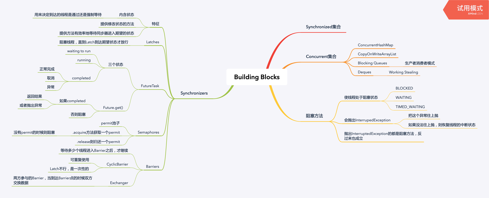

Synchronized集合
看你怎么用，有可能线程不安全
有时候虽然用了Synchronized集合，也不代表线程安全，比如下面的就是：
public static Object getLast(Vector list) {
int lastIndex = list.size() - 1; // 1
return list.get(lastIndex); // 2
}因为在1和2之间可能会有对Vector的其他写操作。正确的做法是：
public static Object getLast(Vector list) {
synchronized (list) {
// ...
}
}Iterators的ConcurrentModificationException
这个问题在迭代集合的同时在删除集合元素时发生。
隐藏的Iterators
有些时候Iterator不是明显的，比如下面代码：
public class HiddentIterator {
private final Set<Integer> set = new HashSet<>();
public synchronized void add(Integer v) { ... }
public void addTenThings() {
for (int i = 0; i < 10; i++) {
add(i);
}
System.out.println("Set: " + set);
}
}上面println隐式调用了Set的toString，而toString有隐式做了迭代器。
Concurrent集合
阻塞及可中断方法

InterruptedException没法往上抛的处理例子：
public class TaskRunnable implements Runnable {
public void run() {
try {
someBlockingCall();
} catch (InterruptedException e) {
Thread.currentThread().interrupt();
}
}
}一种Cache的实现
public interface Computable<A, V> {
V compute(A arg) throws InterruptedException;
}
public class Memorizer<A, V> implements Computable<A, V> {
private final ConcurrentHashMap<A, Future<V>> cache = new ConcurrentHashMap<>();
private final Computable<A, V> c;
public Memorizer(Computable<A, V> c) { this.c = c; }
public V compute(final A arg) throws InterruptedException {
while (true) {
Future<V> f = cache.get(arg);
if (f == null) {
Callable<V> eval = new Callable<>() {
public V call() throws InterruptedException {
return c.compute(arg);
}
}
FutureTask<V> ft = new FutureTask<>(eval);
f = cache.putIfAbsent(arg, ft);
if (f == null) {
f = ft;
ft.run();
}
}
try {
return f.get();
} catch (CancellationException e) {
cache.remove(arg, f);
} catch (ExecutionException e) {
throw launderThrowable(e.getCause());
}
}
}
}